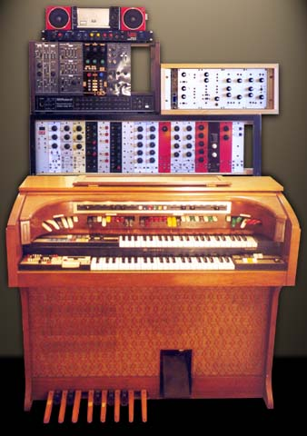
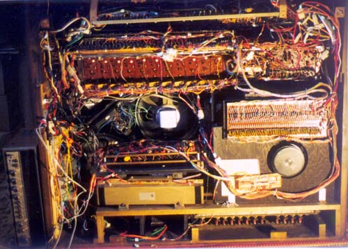

|
Citation Theatre Spinet

Both are in the same room, though at the time of the photo they were not together. I was still trying to work out a decent way to have the keyboards near the organ. The organ is too tall to have the synth keyboards sitting on top. Why the organ? It looks like an old Lowrey. Indeed it is an old Lowrey, from the early seventies. Back in 1975, when I was demonstrating organs in center court, Southland, there were two organs that impressed me, the Symphonic Theatre Console and the Citation Theatre Spinet, both top of the range, priced at roughly $10,000 and $7,000 respectively. The Symphonic had a string synth built into it, as well as a "Brass Symphonizer". The Citation had just the Brass Symphoniser. Says I, eleven or twelve at the time and referring to the Citation, "I'm going to buy one of these when I grow up." After all, it was the cheaper of the two. Well, 1981 came along, and with it HSC exams etc., and I stopped playing the organ. Eighteen years later, I'm playing with the idea of buying an old organ thinking of stripping it for parts to go into the synth, knowing how prices have fallen. I decide an old Lowrey would be fun, so I scan the Trading Post for a few weeks. One Citation is advertised for $700, but is really beyond my budget. Then I spot the ad: Electronic theatre organ Citation brand. 2k/board & It's the second time the ad has run, and a not being aware of any "Citation" brands, I figure this could be what I'm looking for. A phone call doesn't clarify it, but as it's on the way home from the office, I drop in for a look. Indeed it is the Lowrey Citation Theatre Spinet, though the power supply and power amps are missing, and have been for ten or so years, the organ having been written off then passed from one person to another. The elderly couple are positively eager for me to take it, even suggesting that some parts would be salvagable, even if the organ was beyond repair. The price? $10. It cost me nearly ten times that to move it! A service manual cost an extra $30, and we were in business. After being told I was wasting my time repairing an organ that "never was any good" by the guy who sold me the manual, I tackled the problem with little hope of finding original parts. The manual was written with repair in mind, NOT construction. It assumes everything is there. I wasn't really worried if I could repair it or not. The manual was needed if I was to be able to salvage some of the circuits intact. I decided to try repairing it anyway, just for the challenge. After much wire tracing, a power supply was built using junk I had to hand: three transformers, one with a modified winding, an industrial mains terminal strip, numerous large capacitors, a 12V regulator, a LM317 set at 21V and numerous diodes strung in series to get the various voltages. The power amps were a different matter. I had trouble finding one that worked in the situation. Eventually, I used the amps in the little red radio that can be seen on the top of the stack. It was lacking in power, but didn't cause the other problems I had been experiencing. A few other faults in the organ had to be traced and fixed as well (usually dead electros), not to mention removing the corpse of the mouse that had become trapped in the expression pedal! A few weeks later I picked up a Sony tuner/amp for next to nothing ($1?) at a garage sale. After replacing the internal fuses, all four of which were missing (deliberate sabotage by a previous owner?) the amp worked fine, and was wired into the organ. It can be seen beside the organ in the photo below. These organs were advertised as using "large scale integrated circuits" in their design. Quite amusing really. There are roughly 26 chips. They are as follows: Part 1 and part 2 of the Top Octave Synthesiser, and 24 four pin and six pin "chips" that made up the octave dividers, some having two divide by two stages, some having one. And that's all. Everything else was transistor, even the rhythm generator. Not an op-amp anywhere. The power supply was smoothed, not regulated, apart from a few zeners, and an eight volt zener-transistor regulator for the tape deck. A computer interface has been added to the rhythm unit. That can be seen to the left of the speaker magnet at the bottom right of the cabinet. The replacement supply is at the left end of the cabinet, in the correct position, standing on end. The amplifier is to the left of the cabinet, also standing on end.  EpilogeIn March 2003 I decided it was time to move on. Two more dividers had blown, and I decided against fixing them, instead choosing to clear the space for my recently aquired Schober. It was disassembled, with the good parts being put aside for upgrading some areas of the Schober. Article, art & design copyright 1999 by Ken Stone
|